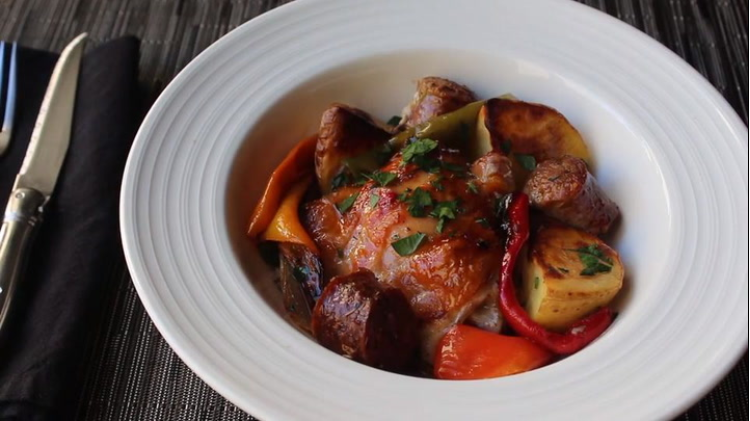

Chicken, Sausage, Potates, and Veggie Meal

Ingredients:
- 4 Large - Sausage Links *
- 4 - Chicken Breasts
- 6 - Bell Peppers
- 1 Small - Red Onion
- 6 Large - Gold Potatoes
- 31/2 Tablespoons - Olive Oil
- 2 Teaspoons - Italian Herbs
- 2 Teaspoons - Salt
- To Taste - Black Pepper
* Flavor up to personal taste
Cooking Steps:
- Preheat oven to 450°F or 230°C
- Heat one tablespoon of oil in skillet over medium heat. Then cook sausage links until browned or about 3 minutes per side
- Pierce the sausges in a few places to allow some fats and juices to leak out
- After sausages are done and cooled enough to handle cut them into 2 inch slices and return to skillet
- Add the sliced onions and peppers, the diced potatoes, and the sausages along with the oil and juices from the skillet into a large mixing bowl
- Sprinkle on the salt, pepper, italian herbs, and the another tablespoon of olive oil
- Coat roasting pan with the last tablespoon and a 1/2 of oil and add chicken breasts
- Mix ingredients with your hands until all ingredients are coated in oil and transfer to roasting pan on top of chicken breasts
- Place in preheated oven for about an hour until the chicken is cooked through and everything is carmalized.
Internal chicken temperature should be 165°F or 74°C
Enjoy!
Recipe Information:
This recipe is modified from the original to match our personal tastes
Citation:
Chef John. (2022, November 2). Chicken, sausage, peppers, and potatoes. Allrecipes.
//www.allrecipes.com/recipe/255936/chicken-sausage-peppers-and-potatoes/
Contact Info
Email me
Jennifer Hale
4229 Holt Street
Jupiter, FL 33478